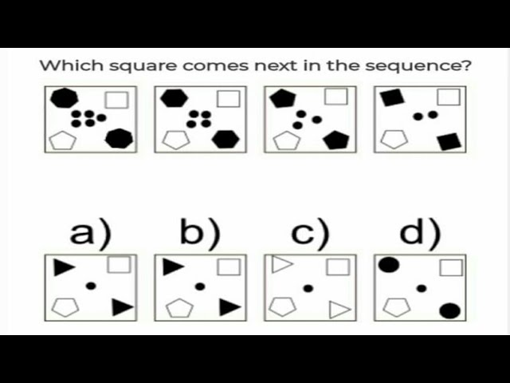

Reasoning and Problem-Solving Questionnaire
Section 1: Logical Reasoning
1.1. Syllogisms
1. All dogs are animals. All animals have four legs. Therefore, all dogs have four legs.
False
True
Uncertain
2. Some fruits are sweet. All apples are fruits. Therefore, some apples are sweet.
True
False
Uncertain
1.2. Pattern Recognition
1. What comes next in the sequence? 2, 4, 8, 16, __
24
32
20
18
2. Find the missing number in the series: 1, 3, 6, 10, 15, __
20
21
22
19
Section 2: Verbal Reasoning
2.1. Analogies
1. Book is to Reading as Fork is to:
Drawing
Writing
Eating
Stirring
2. Cat is to Kitten as Dog is to:
Calf
Puppy
Foal
Cub
2.2. Critical Thinking
1. A doctor is to hospital as a teacher is to:
Office
School
Market
Factory
2. Identify the conclusion: "All roses are flowers. Some flowers fade quickly. Therefore, some roses fade quickly."
Valid
Invalid
Section 3: Numerical Reasoning
3.1. Basic Arithmetic
1. If a train travels at 60 km/h for 3 hours, how far does it travel?
120 km
180 km
240 km
300 km
2. What is 25% of 200?
25
50
75
100
3.2. Word Problems
1. If John has 3 apples and gives 2 to Mary, how many apples are still left?
1
2
3
4
2. A car's fuel efficiency is 20 miles per gallon. How many gallons are needed to travel 100 miles?
4
5
6
7
Section 4: Abstract Reasoning
4.1. Shapes and Patterns
1. Identify the next shape in the sequence:
Shape A
Shape B
Shape C
Shape D
Shape E
2. Which shape does not belong?

Shape a
Shape b
Shape c
Shape d
Section 5: Situational Judgment
5.1. Work Scenarios
1. A colleague is struggling to meet a deadline. What do you do?
Ignore the situation
Report to supervisor
Offer help
Take over task
2. A customer is unhappy with a service. How do you handle it?
Apologize and offer a solution
Ignore the complaint
Escalate to manager
Listen and empathize
Check score
Score Card
Correct Answers:
Incorrect Answers:
Close